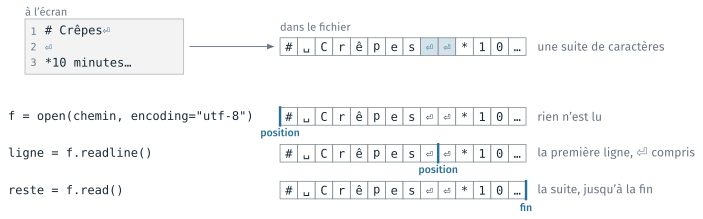
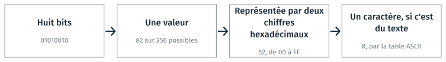
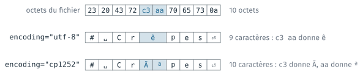
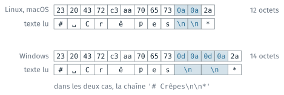
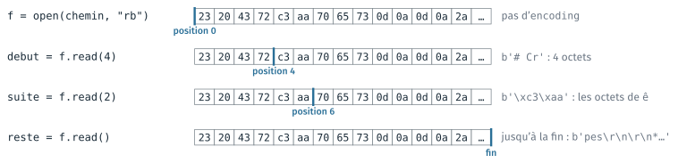
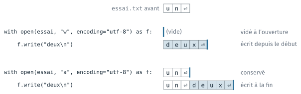

Fichiers et encodage#
Cette partie explique les lignes du programme de la recette qui ouvrent, lisent
et écrivent un fichier. Elle part de ce qu’un éditeur affiche, un texte sur
plusieurs lignes, et descend d’un niveau à chaque section : le texte est une
suite de caractères, chaque caractère est écrit en octets, et l’encodage
définit ce passage. Elle présente ensuite le mode binaire, qui lit les octets
sans les décoder, puis with et les modes d’écriture. Deux TD l’accompagnent,
le notebook fichiers.ipynb du TD 3c et, facultatif, le notebook
images.ipynb du TD 3d ; ils sont présentés en fin de page.
Lire un fichier : ouvrir, lire, fermer#
Lire un fichier demande trois étapes : l’ouvrir avec la fonction open, le
lire avec une méthode de l’objet fichier que open renvoie, puis le fermer
avec la méthode close.
# 1. ouvrir : f est l'objet fichier
f = open(chemin, encoding="utf-8")
# 2. lire, ici avec la méthode read
texte = f.read()
# 3. fermer
f.close()
Tant qu’il est ouvert, le fichier est réservé par le programme : sous
Windows, un autre programme ne peut ni l’effacer ni le remplacer. Après
close(), f.read() lève une erreur ValueError. L’argument encoding est
expliqué plus bas, à la section Le fichier, une suite
d’octets.
Il existe plusieurs façons de lire un fichier ouvert :
Lecture |
Ce qui est obtenu |
En mémoire |
|---|---|---|
|
une chaîne : tout le texte |
tout le fichier |
|
une chaîne : la ligne suivante, fin de ligne comprise |
une ligne |
|
une liste de chaînes, une par ligne |
tout le fichier, découpé |
|
une chaîne à chaque itération, une par ligne |
une ligne à la fois |
Sur un fichier de plusieurs gigaoctets, un nuage de points LiDAR écrit en
texte par exemple, read() échoue faute de mémoire ; la boucle for le
traite ligne par ligne, et break arrête la lecture avant la fin.
Le texte, une suite de caractères#
Un éditeur affiche le texte sur plusieurs lignes. Dans le fichier, le texte
est une seule suite de caractères, et chaque fin de ligne est un caractère,
noté ⏎ sur la figure. L’objet fichier garde une position dans cette suite :
chaque lecture part de cette position et la fait avancer. readline lit
jusqu’au prochain ⏎, inclus.

Le texte affiché sur trois lignes, et la même suite de caractères dans le fichier. ␣ représente l’espace.#
Les caractères de contrôle, \n et \t#
La fin de ligne et la tabulation sont des caractères de contrôle, sans
symbole visible. Dans une chaîne Python, ils s’écrivent avec une barre
oblique inverse suivie d’une lettre : \n pour la fin de ligne, \t pour la
tabulation. print affiche leur effet ; repr affiche la chaîne telle
qu’elle s’écrit en Python. \n compte pour un seul caractère.
print("un\tdeux\ntrois")
print(len("\n"))
print(repr("# Crêpes\n"))
un deux
trois
1
'# Crêpes\n'
Une fin de ligne tapée avec la touche Entrée entre les guillemets termine la
ligne de code : Python lève SyntaxError: unterminated string literal. La
barre oblique inverse permet d’écrire ce caractère dans une chaîne.
Fichiers binaires et fichiers texte#
Tout fichier est une suite de bits, qui valent 0 ou 1, regroupés par
octets de huit. Un octet peut prendre 2⁸ = 256 valeurs, que les outils
écrivent avec deux chiffres hexadécimaux, de 00 à FF : la base seize
compte de 0 à 9 puis de A à F, et un chiffre hexadécimal représente
quatre bits.

Un octet, sa valeur, son écriture hexadécimale, et le caractère qu’il code dans un fichier texte.#
Un fichier est dit texte quand chacun de ses octets représente un caractère, et binaire sinon : ses octets ont alors le sens que leur donne son format. Tous les fichiers sont des suites de bits ; « binaire » signifie ici que le fichier n’est pas fait pour être lu caractère par caractère.
Fichier texte |
Fichier binaire |
|
|---|---|---|
Ses octets |
des caractères, tous |
ce que le format décide |
Qui le lit |
n’importe quel éditeur de texte |
le logiciel qui connaît le format |
Ce qu’on en fait |
le lire, le comparer, le versionner |
l’ouvrir dans son logiciel |
Cette différence revient dans tout le module : un fichier texte se compare ligne à ligne et se versionne avec git, un fichier binaire non.
Le fichier, une suite d’octets#
Sur le disque, un fichier est une suite d’octets. L’encodage, donné par
l’argument encoding de open, définit le caractère qui correspond à chaque
octet ou groupe d’octets. Décodés avec un autre encodage, les mêmes octets
donnent d’autres caractères.

Les mêmes octets, décodés en UTF-8 puis en cp1252.#
recette.md est écrit en UTF-8. Sans l’argument encoding, Python prend
l’encodage du système, cp1252 sous Windows, et le fichier se lit de
travers : « ê » devient « ê », « é » devient « é ». Chaque lecture et
chaque écriture de texte porte donc encoding="utf-8".
ASCII et UTF-8#
Un encodage écrit chaque caractère en octets. Le code ASCII définit 128 caractères, écrits sur un octet chacun : les lettres sans accent, les chiffres, la ponctuation, l’espace et le retour à la ligne. UTF-8 reprend ces 128 codes sur les mêmes octets, et écrit tous les autres caractères sur deux, trois ou quatre octets.
Caractère |
ASCII |
UTF-8 |
|---|---|---|
|
|
|
|
absent |
|
|
absent |
|
|
absent |
|
len compte les caractères d’une chaîne, et encode("utf-8") renvoie ses
octets : « œuf » a trois caractères et quatre octets, « oeuf » quatre et
quatre. "œ".encode("ascii") lève UnicodeEncodeError, car œ n’a pas de
code ASCII. œ manque aussi en ISO 8859-1, l’encodage courant des textes
français avant UTF-8 ; les fichiers anciens écrivent donc « oeuf ».
En UTF-8, chaque octet, écrit en binaire, commence par un certain nombre de
1, suivis d’un 0. Ce nombre de 1 en tête donne le rôle de l’octet :
Début de l’octet |
|
Rôle de l’octet |
|---|---|---|
|
0 |
un caractère ASCII, écrit sur un seul octet |
|
1 |
un octet de suite, qui continue un caractère |
|
2 |
le premier octet d’un caractère de 2 octets |
|
3 |
le premier octet d’un caractère de 3 octets |
|
4 |
le premier octet d’un caractère de 4 octets |
Le premier octet d’un caractère écrit sur plusieurs octets porte autant de
1 en tête que le caractère compte d’octets. Le début 10, avec un seul
1, est réservé aux octets de suite : un premier octet a donc toujours au
moins deux 1 en tête. Les octets de suite commencent par 1 : aucun octet
d’un caractère écrit sur plusieurs octets ne ressemble à un caractère ASCII.
Un octet 0a, par exemple, est toujours une fin de ligne, jamais une partie
de é.
Les bits notés x, mis bout à bout, forment le numéro du caractère. Pour
é, c3 a9 s’écrit 11000011 10101001 : sans 110 ni 10, il reste
00011101001, soit 233, le numéro que ord("é") renvoie.
Des noms de communes de France portent des caractères hors ASCII : Œuilly
(Aisne, et Marne), Plœuc-L’Hermitage (Côtes-d’Armor), L’Haÿ-les-Roses
(Val-de-Marne), Aÿ-Champagne (Marne). Pour qu’ils apparaissent tels quels sur
une carte, le fichier qui les porte est en UTF-8, et le programme qui le lit
écrit encoding="utf-8" ; lu sans cet argument sous Windows, « Plœuc »
devient « PlÅ“uc ».
La fin de ligne#
La fin de ligne est un caractère de contrôle, écrit \n en Python. Sous
Linux et macOS, un fichier texte la code par l’octet 0a ; sous Windows,
souvent par les deux octets 0d 0a, écrits \r\n.

La même ligne, écrite sous Linux et sous Windows, lue en mode texte.#
En mode texte, open remplace \r\n par \n à la lecture ; à l’écriture
sous Windows, il remplace chaque \n par \r\n. Dans le programme, les
lignes sont donc toujours séparées par \n. L’argument newline d”open
modifie cette conversion : le module csv demande newline="".
Le mode binaire#
Le deuxième argument d”open est le mode d’ouverture. Avec le mode "rb",
Python lit les octets du fichier sans les décoder : read renvoie un objet
bytes, et les fins de ligne restent \r\n. Il n’y a pas d’argument
encoding. La position compte des octets : read(4) lit les 4 octets
suivants.

Le fichier écrit sous Windows, lu en mode binaire.#
Python affiche un objet bytes précédé de b : les octets qui correspondent
à un caractère ASCII visible s’affichent comme ce caractère, les autres en
hexadécimal, \xc3. Le mode "wb" écrit des octets. Un programme lit et
écrit une image en mode binaire ; le notebook facultatif images.ipynb en
donne des exemples.
Fermer automatiquement avec with#
Un fichier ouvert doit être fermé, même si une erreur se produit pendant sa
lecture ou son écriture. Le bloc with s’en charge : le fichier est ouvert
au début du bloc, accessible dans le bloc indenté sous le nom écrit après
as, et fermé à la fin du bloc, y compris en cas d’erreur.
with open(chemin, encoding="utf-8") as f:
texte = f.read()
# ici, f est fermé
Situation |
|
|
|---|---|---|
une erreur survient pendant la lecture |
le fichier reste ouvert : |
fermé |
|
le fichier reste ouvert jusqu’à la fin du programme |
aucun |
En Python, on ouvre en général les fichiers avec with. Les fonctions
utiles de la recette emploient cette forme.
Les modes d’écriture#
Par défaut, un fichier est ouvert en lecture seule, le mode "r". Le mode
"w" vide le fichier à l’ouverture, puis écrit depuis le début. Le mode "a"
conserve le contenu et écrit à la fin. Dans les deux modes, un fichier absent
est créé.

Les modes "w" et "a" sur un fichier qui contient un⏎.#
Mode |
Ce qu’il fait |
Si le fichier n’existe pas |
S’il existe |
|---|---|---|---|
|
lire (défaut) |
erreur |
lu |
|
écrire |
créé |
vidé, puis réécrit |
|
ajouter à la fin |
créé |
conservé, complété |
|
créer et écrire |
créé |
erreur |
Ces modes lisent et écrivent des chaînes de caractères. Avec la lettre b en
plus ("rb", "wb"), le fichier est ouvert en mode binaire.
Les lignes du programme#
La fonction generer lit la recette, puis écrit la page complétée :
# ouvrir la recette, lire tout son texte, fermer à la fin du bloc
with open(fichier_recette, encoding="utf-8") as fichier:
source = fichier.read()
intitule = f"## Ingrédients pour {personnes} personnes en {unites}"
complete = source.replace("## Ingrédients", intitule + "\n\n" + tableau(ingredients))
# ouvrir la sortie en mode "w" (créée ou vidée), y écrire la chaîne
with open(fichier_sortie, "w", encoding="utf-8") as fichier:
fichier.write(complete)
Les objets Path ont des méthodes qui font ces trois opérations, ouvrir,
lire ou écrire, fermer, en une ligne : chemin.read_text(encoding="utf-8"),
chemin.write_text(texte, encoding="utf-8") et chemin.read_bytes().
TD de la partie#
TD 3c,
fichiers.ipynb, dans le dossiercours3/3c_fichiers/de l’archive : les sections suivent l’ordre de cette page ; les sections 10 et 11, le CSV et les raccourcis depathlib, se font après la séance, et la section 12, facultative, lit à la main un fichier.npyen mode binaire.TD 3d,
images.ipynb, facultatif, danscours3/3d_images/: une image PGM en texte et en binaire, la signature d’un format, une image en cinq formats et la compression.
Les TD des autres parties sont dans Travaux dirigés de la séance 3.